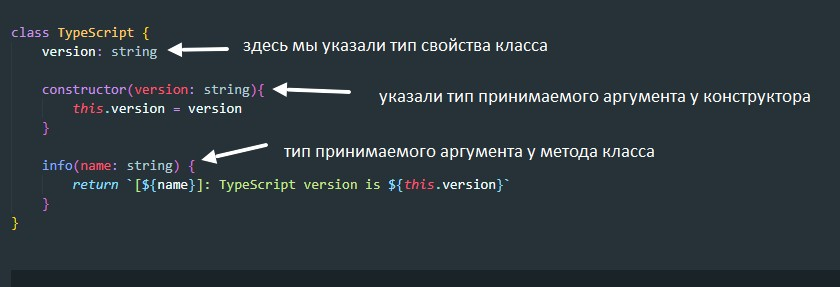
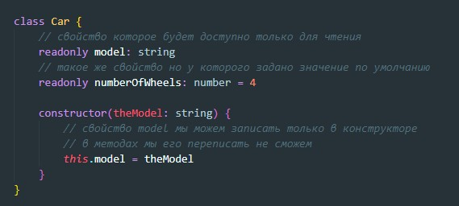
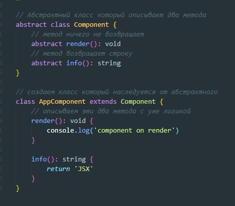

Пример создания класса в TypeScript
Определяем типы полей класса до конструктора. Вот второй вариант объявления класса с полями доступными только для чтения и поля со значениями по умолчанию
Что такое модификаторы? существуют три основных модификатора: protected, public и private - т.е. они определяют доступность и видимость свойства класса. Если мы не прописываем модификатор, то свойство имеет модификатор по умолчанию - public
Создание абстрактного класса происходит с помощью ключевого слова abstract. Для чего они нужны? Абстрактные классы просто имеют описание методов или свойств и задают им тип данных. По сути абстрактные классы нужны только для того что бы от них наследовались другие классы и тогда в этих классах нам не нужно будет описывать типизацию данных у свойств и методов
